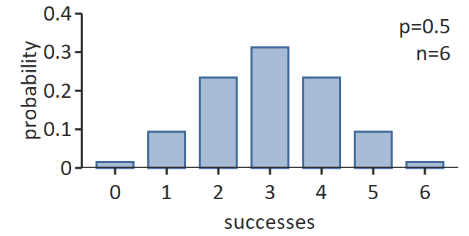
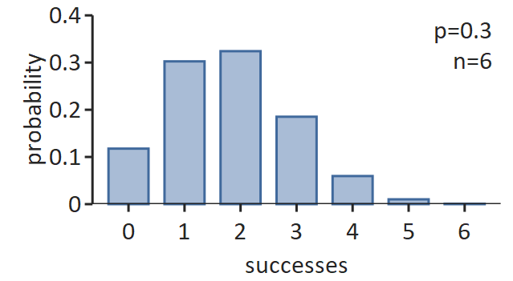

Binomial Distribution
Menu location: Analysis_Distributions_Binomial.
A binomial distribution occurs when there are only two mutually exclusive possible outcomes, for example the outcome of tossing a coin is heads or tails. It is usual to refer to one outcome as "success" and the other outcome as "failure".
If a coin is tossed n times then a binomial distribution can be used to determine the probability, P(r) of exactly r successes:
$\displaystyle P(r)=\left(\begin{array}{c}n\\ r\end{array}\right)p^r(1-p)^{n-r} \\
\displaystyle P(r)=\frac{n!}{r!(n-r)!}p^r(1-p)^{n-r}$
Here p is the probability of success on each trial, in many situations this will be 0.5, for example the chance of a coin coming up heads is 50:50/equal/p=0.5. The assumptions of above calculation are that the n events have mutually exclusive outcomes, are independent and are randomly selected from a binomial population. Note that ! is a factorial and 0! is 1 as anything to the power of 0 is 1.
In many situations the probability of interest is not that associated with exactly r successes but instead it is the probability of r or more (≥r) or at most r (≤r) successes. Here the cumulative probability is calculated:
$\displaystyle P(\ge r)=\sum_{i=r}^n P(r_i) \\
\displaystyle P(\le r)=\sum_{i=0}^r P(r_i) \\$
The mean of a binomial distribution is np and its standard deviation is sqr(np(1-p)); as a proportion (r/n) the mean is p and the standard deviation is sqr(p(1-p)/n). The shape of a binomial distribution is symmetrical when p=0.5 or when n is large.


When n is large and p is close to 0.5, the binomial distribution can be approximated from the standard normal distribution; this is a special case of the central limit theorem:
$\displaystyle P(\ge r)= P(z)=P \left[ \frac{r/n-p}{\sqrt{p(1-p)/n}} \right] \\$
Please note that confidence intervals for binomial proportions with p = 0.5 are given with the sign test.
Technical Validation
StatsDirect calculates the probability for exactly r and the cumulative probabilities for (≥,≤) r successes in n trials. The gamma function is a generalised factorial function and it is used to calculate each binomial probability. The core algorithm evaluates the logarithm of the gamma function (Cody and Hillstrom, 1967; Abramowitz and Stegun 1972; Macleod, 1989) to the limit of 64 bit precision.
Γ(*) is the gamma function:
$\displaystyle \Gamma (x) = \int_0^{\infty} t^{x-1}e^{-t} \space dt, \space x>0 \\$
Γ(1)=1
Γ(x+1)=xΓ(x)
Γ(n)=(n-1)!
Illustration
Consider a fair coin (p = 0.5) tossed 10 times. To calculate the probability of 5 heads in StatsDirect select Binomial from the Distributions section of the Analysis menu, enter 0.5 as the probability of success per trial, 10 as the number of trials and 5 as the number of successes. StatsDirect shows the probability of exactly 5 successes, of 5 or more and of 5 or fewer, and reports the three on one line:
P(binomial p 0.5, 10 trials) = 0.24609375 [5 successes], 0.623046875 [>=5 successes], 0.623046875 [<=5 successes]
These are the exact values, 252/1024 = 0.24609375 and 638/1024 = 0.623046875, shown without trailing zeros.
Exactly 5 heads is the most likely single outcome, but its probability is just under a quarter. The probabilities of 5 or more and of 5 or fewer heads are equal because the distribution is symmetrical when p = 0.5, and each is more than a half because both include the case of exactly 5 heads. The expected number of heads is np = 5 and the standard deviation is sqr(np(1-p)) = 1.581139.
Now consider a treatment that succeeds in one patient in four (p = 0.25) given to 20 patients, 8 of whom are treated successfully. Enter 0.25 as the probability of success per trial, 20 as the number of trials and 8 as the number of successes:
P(binomial p 0.25, 20 trials) = 0.060886689216204 [8 successes], 0.101811856922723 [>=8 successes], 0.959074832293481 [<=8 successes]
If the treatment really succeeded in one patient in four, 8 or more successes among 20 would occur about one time in ten (P = 0.1018), so this result is only weak evidence that the treatment does better than that. The probability of 8 or more successes is the one sided P value of an exact binomial test of 8 successes in 20 against a success rate of 0.25.
The two report lines are what StatsDirect prints, to 15 decimal places. The R code below recomputes the probabilities.
 R code
R code
This R code reproduces the illustration above. It needs no packages and was checked with R 4.6.1. Paste it into R, or save it as a script and run it.
# Binomial distribution: the StatsDirect help illustration (a fair coin tossed 10 times,
# and a treatment that succeeds in one patient in four given to 20 patients) in R
# dbinom(r, n, p) is the probability of exactly r successes in n trials, pbinom(r, n, p)
# the probability of r or fewer; with lower.tail = FALSE, pbinom gives the probability
# of more than r successes, so r or more is pbinom(r - 1, n, p, lower.tail = FALSE).
dbinom(5, 10, 0.5) # exactly 5 heads in 10 tosses of a coin
pbinom(5, 10, 0.5) # 5 or fewer heads
pbinom(4, 10, 0.5, lower.tail = FALSE) # 5 or more heads
# The dialog's report line, its probabilities to 15 decimal places
fifteen <- function(x) formatC(x, digits = 15, format = "f", drop0trailing = TRUE)
six <- function(x) formatC(x, digits = 6, format = "f", drop0trailing = TRUE)
binomial <- function(p, n, r) {
cat("P(binomial p ", p, ", ", n, " trials) = ", fifteen(dbinom(r, n, p)), " [", r,
" successes], ", fifteen(pbinom(r - 1, n, p, lower.tail = FALSE)), " [>=", r,
" successes], ", fifteen(pbinom(r, n, p)), " [<=", r, " successes]\n", sep = "")
}
binomial(p = 0.5, n = 10, r = 5)
# The same from the formula in the text: choose(n, r) is n! / (r! (n - r)!)
r <- 0:10
exactly <- choose(10, r) * 0.5^r * (1 - 0.5)^(10 - r)
cat("Exactly 5 =", fifteen(exactly[r == 5]),
" 5 or more =", fifteen(sum(exactly[r >= 5])),
" 5 or fewer =", fifteen(sum(exactly[r <= 5])), "\n")
cat("Mean np =", 10 * 0.5, " standard deviation sqrt(np(1-p)) =",
six(sqrt(10 * 0.5 * (1 - 0.5))), "\n")
# The normal approximation of the text for 5 or more heads, and with the continuity
# correction (r - 0.5 in place of r) that is usual for it: crude with n as small as 10
se <- sqrt(0.5 * (1 - 0.5) / 10)
cat("Normal approximation to P(>=5) =",
six(pnorm((5 / 10 - 0.5) / se, lower.tail = FALSE)),
" with continuity correction =",
six(pnorm((4.5 / 10 - 0.5) / se, lower.tail = FALSE)), "\n")
# A treatment that succeeds in one patient in four, given to 20 patients: 8 successes
binomial(p = 0.25, n = 20, r = 8)
# The probability of 8 or more successes is the one sided P value of the exact binomial
# test of 8 successes in 20 against a success rate of 0.25
print(binom.test(8, 20, p = 0.25, alternative = "greater"))
# qbinom is the inverse, the smallest r whose cumulative probability P(<= r) reaches the
# probability given; the StatsDirect dialog does not offer it for the binomial
qbinom(0.95, 20, 0.25) # 8: P(<=7) is 0.898188 and P(<=8) 0.959075